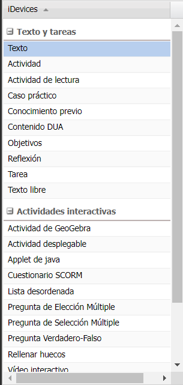

ENTORNO DE TRABAJO
- Menú principal: en esta sección se gestionan los archivos, la impresión, las exportaciones, los estilos, las preferencias de usuario y la ayuda. En la esquina superior derecha aparece el botón de "Previsualización" y la opción "Modo avanzado", que mostrará más opciones en el menú.
- Estructura: en esta sección podremos crear el índice de nuestros contenidos según está definido: Tema, Sección y Unidad de forma jerárquica.
- iDevices: en esta sección podremos elegir entre diferentes elementos ("iDevices") que nos permiten incluir diversos tipos de contenidos y actividades a nuestro recurso.
- Área de trabajo: en esta sección hay dos pestañas: contenido y propiedades. En "Contenido" podremos visualizar lo que vamos creando y en "Propiedades" incluir metadatos según se comentó anteriormente.
En la siguiente captura de pantalla podremos ver la distribución de estas cuatro zonas de trabajo en las que se encuentra dividido eXe:
EDITOR DE TEXTO
TinyMCE es el editor de texto WYSIWYG para HTML de código abierto utilizado en eXeLearning. Su visualización es la siguiente:
iDEVICE
Los iDevices, en términos generales son el tipo de contenido que se puede agregar a las páginas y están agrupados en 4 grupos de la siguiente manera:
- iDevices Texto y tareas
- iDevices Actividades Interactivas
- iDevices Juegos
- iDevices Otros contenidos

Para más información te invito a que revises el material que aparece en el video.
IMPORTAR O EXPORTAR elps
Las opciones "Insertar .elp" y "Exportar .elp" dan la posibilidad de exportar o insertar trozos de eXeLearning que se han trabajado en otros recursos. De esta forma, podremos combinar partes de diferentes proyectos reutilizando contenidos. Estas opciones se dan en las diferentes páginas, tanto para insertar como para exportar.
Podemos acceder a estas opciones de dos formas:
- Haciendo clic con el botón derecho en la página que queremos exportar o importar.
- En Modo avanzado, también podemos acceder desde el menú principal Archivo > Importar o Archivo > Exportar.
Cuando se utilicen estas opciones, se debe tener cuidado de que el árbol de contenidos queda correctamente. Hay que recordar la jerarquía que tienen las páginas y subpáginas.
Recuerda...
Es posible tener diferentes tipos de Jerarquías para los contenidos.
Recuerda...
En la opción avanzado, se tiene un control casi total en lo diagramático y el contenido.
Recuerda...
Los iDevices permiten crear tipos diferentes de contenido para ser agregado a las páginas del recurso.
Recuerda...
El espacio de trabajo se divide en cuatro grandes grupos.